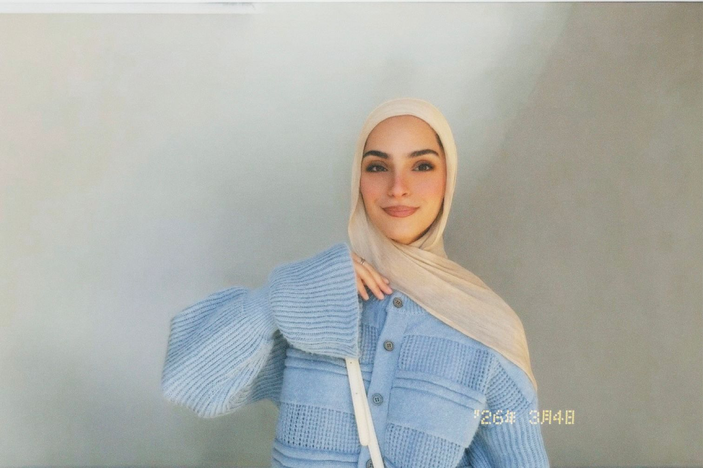

| Name | Link |
|---|---|
| Python | python.org |
| Wireshark | wireshark.org |
| Kali Linux | kali.org |
| Metasploit | metasploit.com |
Email me directly: skbawaneh23@cit.just.edu.jo
In four years, I see myself thriving as a cybersecurity expert who blends technical mastery with creativity. My dream is to work on securing cloud platforms and investigating cyber incidents with precision and confidence. I want to be part of international teams that collaborate to fight digital threats and protect sensitive data. Alongside professional growth, I aim to inspire other young women to pursue cybersecurity and break barriers in the tech world. By combining knowledge, passion, and leadership, I hope to leave a positive mark on the future of digital security.